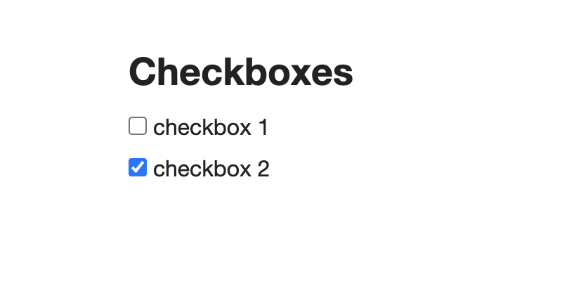
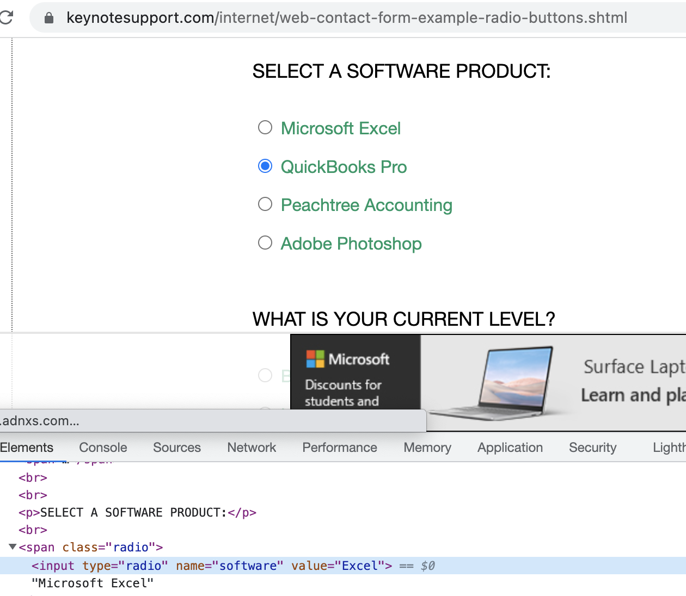
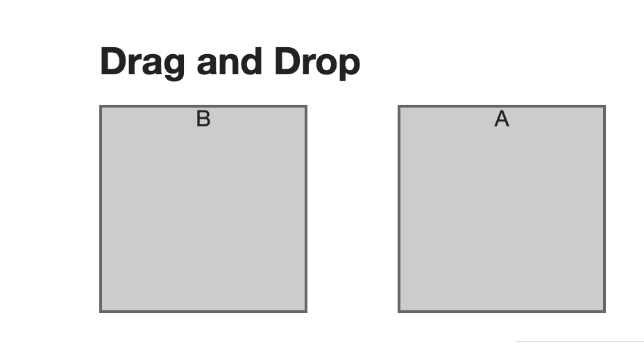

Robot : Different Types of Variables
*** Variables *** ${emailID} test@test1.com #Scalar ${Password} password123 #Scalar @{applicationList} Google Facebook Amazon #List &{VisibleElements} OrangeHRM= id:welcome InternetHerokuApp=css:[href="/logout"] #Dictionary
Robot : Click On a Web Element like Link/Button
Below example shows how to click on Google Logo
*** Settings *** Library SeleniumLibrary *** Variables *** *** Test Cases *** Verify Google Application Open Browser https://www.google.com Chrome Maximize Browser Window Click Element xpath://img[@class='lnXdpd'] # To click on Google Logo Close All Browsers *** Keywords ***
Robot : Type on a Text Box
Input Text id:txtPassword admin123
Below example shows how to type on Google search text box
*** Settings *** Library SeleniumLibrary *** Variables *** *** Test Cases *** Verify Google Application Open Browser https://www.google.com Chrome Maximize Browser Window Input Text xpath://input[@name='q'] Robot Framework # Google Search For Robot Framework Close All Browsers *** Keywords ***
Robot : Wait Until Page Contains a Perticular Text
Wait Until Page Contains Contact
Below example shows how to wait your scripts till its finding text called 'Contact'
*** Settings *** Documentation Login Functionality Library SeleniumLibrary Suite Teardown Suite shutdown *** Variables *** *** Test Cases *** Verify Google Application Open Browser https://techedtrainings.com/ Chrome Maximize Browser Window Wait For Condition return document.title == "TechEd Trainings – IT Corporate Trainings" Wait Until Page Contains Element xpath://a[contains(.,'CONTACT NOW')] Sleep 5 Click Element xpath://a[contains(.,'CONTACT NOW')] Wait Until Page Contains Contact Sleep 5 *** Keywords *** Suite shutdown Close All Browsers
Robot : Wait Until Page Contains an Web Element
Wait Until Page Contains Element xpath://a[contains(.,'CONTACT NOW')]
Below example shows how to wait your scripts till its finding xpath == //a[contains(.,'CONTACT NOW')]
*** Settings *** Documentation Login Functionality Library SeleniumLibrary Suite Teardown Suite shutdown *** Variables *** *** Test Cases *** Verify Google Application Open Browser https://techedtrainings.com/ Chrome Maximize Browser Window Wait For Condition return document.title == "TechEd Trainings – IT Corporate Trainings" Wait Until Page Contains Element xpath://a[contains(.,'CONTACT NOW')] Sleep 5 Click Element xpath://a[contains(.,'CONTACT NOW')] Wait Until Page Contains Element xpath://a[contains(.,'CONTACT NOW')] Sleep 5 *** Keywords *** Suite shutdown Close All Browsers
Robot : Select a Drop down by its value/Index
Select From List By Index menu-363 2
Sleep 2
Select From List By Value menu-774 New Hire Programs
In above example 'Select From List By Index' is Robot Action Key , 'menu-363' is drop down name , 2 is its Index. You can use Xpath to find the drop down too , we are using name here in the example
In above example 'Select From List By Value' is Robot Action Key , 'menu-774' is drop down name , 'New Hire Programs' is its any option value. You can use Xpath to find the drop down too , we are using name here in the example
Below example shows how to select a drop down by its index and another drop down by its value.
*** Settings *** Documentation Login Functionality Library SeleniumLibrary Suite Teardown Suite shutdown *** Variables *** *** Test Cases *** Verify Google Application Open Browser https://techedtrainings.com/ Chrome Maximize Browser Window Wait For Condition return document.title == "TechEd Trainings – IT Corporate Trainings" Wait Until Page Contains Element xpath://a[contains(.,'CONTACT NOW')] Sleep 5 Click Element xpath://a[contains(.,'CONTACT NOW')] Wait Until Page Contains Contact Select From List By Index menu-363 2 Sleep 2 Select From List By Value menu-774 New Hire Programs Sleep 5 *** Keywords *** Suite shutdown Close All Browsers
Robot : Play With Check Boxex With Robot Framework

As per the Image Checkbox 1 is not selected and Checkbox 2 is selected.
Checkbox Should Not Be Selected css:input:nth-child(1) #Checking checkbox 1 is not selected
Checkbox Should Not Selected css:input:nth-child(3) #Checking checkbox 2 is selected
Select Checkbox css:input:nth-child(1) #select checkbox 1
Unselect Checkbox css:input:nth-child(3) #unselect checkbox 2
Below example shows how to verify check box status and check/uncheck Check Boxes
*** Settings *** Documentation Login Functionality Library SeleniumLibrary Suite Teardown Suite shutdown *** Variables *** *** Test Cases *** Verify Google Application Open Browser https://the-internet.herokuapp.com/checkboxes Chrome Maximize Browser Window Checkbox Should Not Be Selected css:input:nth-child(1) #Checking checkbox 1 is not selected Checkbox Should Be Selected css:input:nth-child(3) #Checking checkbox 2 is selected Select Checkbox css:input:nth-child(1) #select checkbox 1 Unselect Checkbox css:input:nth-child(3) #unselect checkbox 2 Checkbox Should Be Selected css:input:nth-child(1) #Checking checkbox 1 is selected Checkbox Should Not Be Selected css:input:nth-child(3) #Checking checkbox 2 is not selected Sleep 2 *** Keywords *** Suite shutdown Close All Browsers
Robot : Play With Radio Buttons With Robot Framework

As per the Image Excel radio button is not selected.
Radio Button Should Not Be Selected software #Checking Excel is not selected
Select Radio Buttond software Excel #Selecting Excel radio button
Radio Button Should Be Set To software Excel # checing Excel radio is selected
Below example shows how to verify radio button status and check a Radio Button
*** Settings *** Documentation Radio Button Functionality Library SeleniumLibrary Suite Teardown Suite shutdown *** Variables *** *** Test Cases *** Radio Button Functionality Open Browser https://www.keynotesupport.com/internet/web-contact-form-example-radio-buttons.shtml Chrome Maximize Browser Window Radio Button Should Not Be Selected software Select Radio Button software Excel Sleep 2 Radio Button Should Be Set To software Excel Sleep 2 *** Keywords *** Suite shutdown Close All Browsers
Robot : How TO Handle Drag and Drop Using Robot Framework

As per the Image we can drag A section into B or B into A.
Drag And Drop id:column-a id:column-b #Dragging A into B
Drag And Drop id:column-b id:column-a #Dragging B into A
Below example shows how to do Drag and Drop Action
*** Settings *** Documentation Drag And Drop Functionality Library SeleniumLibrary Suite Teardown Suite shutdown *** Variables *** *** Test Cases *** To Validate Drag And Drop Open Browser https://the-internet.herokuapp.com/drag_and_drop Chrome Maximize Browser Window Wait Until Element Is Visible id:column-a timeout=5 Wait Until Element Is Visible id:column-b timeout=5 Drag And Drop id:column-a id:column-b sleep 3 *** Keywords *** Suite shutdown Close All Browsers
Robot : How TO Handle Scroll Till Web Element Is Visible?
Scrolling till xpath://a[text()='Elemental Selenium'] is visible.
Scroll Element Into View xpath://a[text()='Elemental Selenium'] # Scroll till Element
Below example shows how to Scroll till a perticular linkText is visible.
*** Settings *** Documentation Scroll to Element Functionality Library SeleniumLibrary Suite Teardown Suite shutdown *** Variables *** *** Test Cases *** Scroll to Element Open Browser https://the-internet.herokuapp.com Chrome Maximize Browser Window Wait Until Element Is Visible xpath://a[text()='Elemental Selenium'] timeout=5 Scroll Element Into View xpath://a[text()='Elemental Selenium'] sleep 3 *** Keywords *** Suite shutdown Close All Browsers
Robot : Keyboard Action Functionality Using Robot Framework
Type a "SPACE" into a Text Box xpath://input[@id='target']
Press Keys xpath://input[@id='target'] SPACE # Type SPACE on xpath://input[@id='target'] Web Element
Below example shows how to Type SPACE on a Text box and Validate its result.
*** Settings *** Documentation Keyboard Action Functionality Library SeleniumLibrary Suite Teardown Suite shutdown *** Variables *** *** Test Cases *** Keyboard Action Functionality Open Browser https://the-internet.herokuapp.com/key_presses Chrome Maximize Browser Window Wait Until Element Is Visible xpath://input[@id='target'] timeout=2 Press Keys xpath://input[@id='target'] SPACE Element Text Should Be xpath://p[@id='result'] You entered: SPACE sleep 3 *** Keywords *** Suite shutdown Close All Browsers
Robot : Mouse Hover Functionality Check
To Hover Mouse on a xpath:(//img[@alt='User Avatar'])[1] We write below code.
Mouse Over (//img[@alt='User Avatar'])[3] # Type Hover on xpath:(//img[@alt='User Avatar'])[1] Web Element
Below example shows how to Hover Mouse on a Web Page Element.
*** Settings *** Documentation Mouse Hover Functionality Library SeleniumLibrary Suite Teardown Suite shutdown *** Variables *** *** Test Cases *** Mouse Hover Functionality Open Browser https://the-internet.herokuapp.com/hovers Chrome Maximize Browser Window Mouse Over xpath:(//img[@alt='User Avatar'])[1] Element Text Should Be css:div:nth-child(3) > div > h5 name: user1 timeout=3 sleep 2 Mouse Over xpath:(//img[@alt='User Avatar'])[2] Element Text Should Be css:div:nth-child(4) > div > h5 name: user2 timeout=5 sleep 2 Mouse Over (//img[@alt='User Avatar'])[3] Element Text Should Be css:div:nth-child(5) > div > h5 name: user3 timeout=5 sleep 3 *** Keywords *** Suite shutdown Close All Browsers